Back-Fitting Template Maps
The back-fitting is about taking the results from the
segmentation, and back-fitting them to the
subjects to be able to extract variables for statistics.
Fitting template maps back to subjects data
Method used for the Fitting
The idea here is to use the maps from the "best"
segmentation of the Grand Means, and fit them back to the subject
files, then apply some statistics on the results.
Practically, this is simply this step
from the K-Means segmentation
process, simply assigning the map with the highest correlation
at each time frame and for each file.
How to run the Fitting
Called from the Tools
| Fitting maps into EEG files menu, a dialog in 3 parts appears:
Fitting Files Dialog
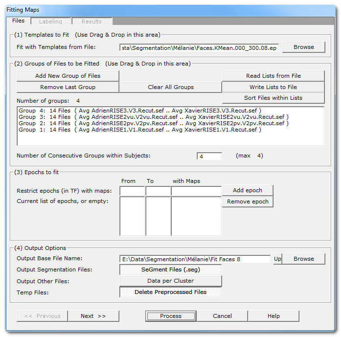
|
(1) Templates to Fit |
|
|
Fit with Templates to File: |
Give the .ep file that
contains the templates,
usually generated by the
Segmentation
process, that will be used for the fitting process.
If you Drag & Drop a single .ep file, this will be
assumed as the
template file. |
|
|
|
(2) Groups of Files to be Fit |
|
|
|
Read some important informations about the meaning
of Groups in the Fitting context.
You can use the very convenient Drag &
Drop feature here. |
|
Add New Group of Files |
Enter a new group of file(s). |
|
Remove Last Group |
Does what it says. |
|
Clear All Groups |
Clear out all the groups at once. |
|
Read Lists from File |
You can direclty retrieve the lists of groups previously (see below).
See also Drag & Drop. |
|
Write Lists to File |
You can save the lists of current groups into a file, in case you
want to re-use them (much recommended!).
See the file formats available. |
|
Sort Files within Lists |
A strange behavior of Windows is to not respect the order of the
files dropped in a window. To help cure this silly habit, you can
sort all the file names of all the groups already entered.
New: Cartool will sort your files if you use
Drag & Drop... |
|
Number of Consecutive Groups within
Subjects: |
Default is to assume all dropped groups above are considered
within-subjects. The
within-subjects number of groups is therefore equal to the total number
of groups.
If this is not the case, you can specify a smaller number of groups
within-subjects. F.ex. 8 groups of files, but first 4 are patients, last
4 controls, then you specify "4" as the number of consecutive
within-subjects.
A few remarks:
- The number you set should be a integer divisor of
the total number of groups.
- You can set the number to 1 in case of
across-subjects design.
- This value is very important to compute the proper
normalization factors of all the extracted variables.
|
|
|
|
(3) Epochs to fit |
You can restrict the time interval to be fit with some given maps. |
|
From |
From time frame (included) |
|
To |
To time frame (included) |
|
with Maps |
A set of templates/maps for which the this epoch will be restricted to.
Let it empty, or set
to *, to use all the maps. |
|
Add epoch |
Insert the specified epoch to the list.
Don't forget to press on this button to enter the current values!
If the list remains empty, the fitting process will be run on the
whole files. Otherwise you can enter a serie of time ranges to
restrict the fitting, but the epochs can not overlap. |
|
Remove epoch |
Remove last epoch from the list. |
|
|
|
(4) Output Options |
|
|
Output Base File Name |
Specify here a basis for all the file names that will be
generated during the segmentation process. |
|
Output Segmentation Files: |
Saving a visual representation of the fitting as a segmentation file. If
you used different epochs, they will be all
merged together for display (they are forbidden to overlap).
Meaningful
only if you run a competitive
fitting process.
Files are located in the More subdirectory.
Also see the .seg specification. |
|
Output Other Files:
Data per Cluster |
This option will save the clusters of maps. There will
be a file for each cluster, and for each subject, with all the data
assign to a given cluster.
Note that this will basically take the same amount of space as your input
data (minus the optional bad epochs).
This is a very handy option to later compute the localization of each
template map, for each subject. |
|
Temp Files:
Delete Preprocessed Files |
Subjects' data could be preprocessed, f.ex. with Spatial Filter and / or
GFP Normalization. With this option, these files are discarded after use
(the default). |
|
|
|
<< Previous | Next >> |
Use these buttons to navigate through the previous and next dialogs
(if any).
See which current dialog you are in, and to which other dialogs you
connect, in the tab-like part at the top of the dialog under
the title.
|
|
Process |
Runs the fitting.
This button remains disabled until all the parameter
dialogs have received enough (and consistent) informations. |
|
Cancel |
Quit the dialog. |
|
Help |
Launch the Help to the right page (should be here...). |
Fitting Parameters Dialog
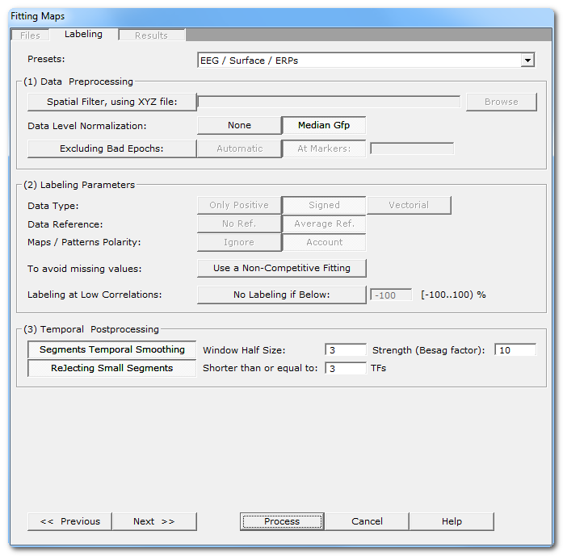
|
Presets: |
This is handy to quickly set the main parameters according to the
most frequent uses, listed in the drop-down box.
The most important parameters will be set, still some
parameters have to be set manually! And, as usual, double
check that all your settings make sense... |
|
|
|
(1) Data Preprocessing |
It is better to preprocess your files once and for all. In case this was
not the case, this is your last chance to apply these preprocessing
before the actual fitting. |
|
Spatial Filter, using XYZ file: |
Applying a Spatial Filter to the
data, to remove outliers and smooth out the
noise.
Be careful, avoid using this this filter more than
once! If your EEG preprocessing pipe-line already included
the Spatial Filter, you shouldn't use it here! Cartool tries to be
smart here, if your files contain the characters "Spatial" in their
names, it will automatically disable this option. |
|
|
|
Data level normalization |
This will rescale the data from each file by a given factor. |
|
None |
No rescaling. |
|
Mean Gfp |
According to the Number of Consecutive
Groups within Subjects parameter, the median GFP across all
within-subject files is computed and used for normalization.
This helps in reducing the inter-subjects variability. |
|
|
|
Excluding Bad Epochs: |
Select this option to skip some time periods from your data.
Data preprocessing is never perfect, and some parts of the data should
still be ignored.
Note that this step is done after the GFP Max, and before the resampling. |
|
Automatic |
Cartool has a bad epochs automatic detection (you might want to give it
a try from the EEG Window, under
Markers|Scanning Bad Markers menu).
This option is seen as a last chance before the clustering. It would
definitely be better to run the detection before, then visually
assess the bad epochs, then only run the clustering.
|
|
At Markers |
Give the marker names of the bad epochs to be ignored.
Either somebody did put some markers manually to isolate the bad epochs,
or have already run the automatic bad epochs detection. |
|
|
|
(2) Labeling Parameters |
|
|
Data Type: |
|
|
Only Positive |
Data consist of positive only, scalar data. This could be
spikes from neuron recordings, or the Results of Inverse Solution, f.ex.
This will logically turn off the Polarity & References options.
See this point on
positive data and also this point. |
|
Signed |
Signed scalar values, like, you know, EEG. |
|
Vectorial |
Used on Inverse Solution
.ris data files,
when the results are vectors for each solution points.
See this point about fitting in the Inverse
Solution space. |
|
Data reference |
|
|
No Reference |
Data are used as they come from files, no changes occur. |
|
Average Reference |
Data are average reference-d. |
|
Maps / Patterns Polarity: |
|
|
Ignore |
Polarity of maps does not matter, so ignore it. Inverted maps are
considered the same (same underlying generators, but with reversed polarity).
Used for spontaneous EEG recordings. |
|
Account |
Polarity of maps matter, that is, inverted maps are indeed considered
as different.
Used for ERPs. |
|
|
|
To avoid missing values:
Use a Non-Competitive Fitting |
When off, all the maps compete with each others to be
elected as the best fitting one for a given time frame. As only one
map can win, the labeling is therefore a competitive process. This is
the default.
When on, it gives each map an exclusive access to the data,
the labeling is therefore run on the whole file with a single map
at a time. The process is repeated for each map. This is useful
to produce variables with non-missing values for later statistics. |
|
|
|
Labeling at Low Correlations:
No Labeling if Below |
If selected, you can specify a minimum correlation threshold
for data points to be assigned to a given cluster.
Default correlation threshold is set to 50%, which is
quite conservative.
See this outliers rejection paragraph. |
|
|
|
(3) Temporal Postprocessing |
|
|
Segments Temporal Smoothing |
Redo the labeling, but with a temporal
smoothing factor. |
|
Window Half Size: |
The temporal smoothing operates with a sliding window, which you
specify here the half size (in time frames). The actual window size
is therefore ( 2 x W + 1 ). |
|
Strength (Besag Factor): |
Strength  of the smoothing, actually the Besag factor from the article on the
segmentation process.
of the smoothing, actually the Besag factor from the article on the
segmentation process. |
|
Rejecting Small Segments |
Deletes short segments, and fuse them with their 2 respective neighbors. |
|
Shorter than or equal to: |
Size below which a segment is removed. |
|
|
|
<< Previous | Next >> |
Use these buttons to navigate through the previous and next dialogs
(if any).
See which current dialog you are in, and to which other dialogs you
connect, in the tab-like part at the top of the dialog under
the title.
|
|
Process |
Runs the
fitting.
This button remains disabled until all the parameter
dialogs have received enough (and consistent) informations. |
|
Cancel |
Quit the dialog. |
|
Help |
Launch the Help to the right page (should be here...). |
Fitting Results Dialog
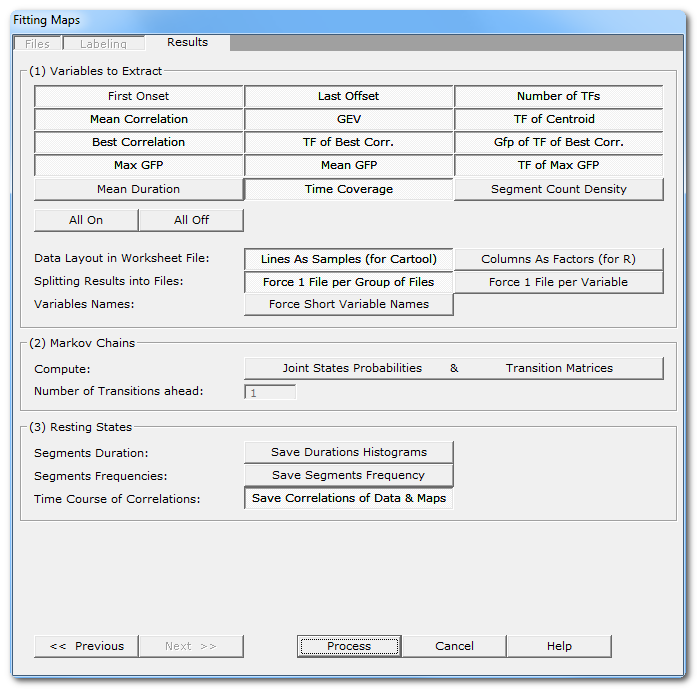
|
(1) Variables to Extract |
See here all the variables that
can be computed, for each subject and for
each template map.
Note that you can be more selective than taking all variables (though it
doesn't hurt), according to your paradigm, some variables might not make
sense at all!
Also some of them will be unavailable in case of
non-competitive fitting.
See this note about the format of the
array of results. |
|
All On
All Off
|
What is says, turns on / off all variables at once. |
|
|
|
Data Layout in Worksheet Files: |
You currently have 2 (non-exclusive) ways of outputting the
multi-dimensional resulting data. |
|
Lines As Samples |
This is a multiplexed format that can
be read by Cartool, Statistica, Excel. etc...
Each line correspond to an input file, then all columns (a lot)
will contain the variables. |
|
Columns As Factors |
This is an indexed array that can
be read by R.
There are some columns that hold the indexes, then the other columns that
hold the factors themselves. |
|
|
|
Splitting Results into Files |
You can also refine how many files to write with these 2 independent
options. |
|
Force 1 File per Group |
1 output file for each group of input file. This is now
the default, as it is more handy to manipulate for statistics.
When option is off, it will pack all
within subjects groups into a
single file.
This can be combined with splitting the variables option below. |
|
Force 1 File per Variable |
1 output file for each computed variable. Not recommended, as it may
create a lot of files.
When option if off, all variables are saved into the same file.
This can be combined with splitting the group option above. |
|
Force
Short Variable Names |
Choose between long (and more explicit) or short (cryptic) variable names.
See this note and this one about the format
of the array of results. |
|
|
|
(2) Markov Chains |
|
|
Joints States Probabilites |
Used to study the transitions from between states.
See this paragraph. |
|
Transition Matrices |
Used to study the transitions from between states.
See this paragraph. |
|
Number of Transitions ahead: |
Number of forward transitions to take into account.
This only compute the probabilities from the current state to the
nth-next
state, and not the order of the Markov Chains
(all combinations of nth
to previous states, to current one). |
|
|
|
(3) Resting States |
These options apply to spontaneous type of data only. |
|
Save Durations Histograms |
What it says.
There will be 2 histograms per map for each subject, one with
linear time scale, and one with
log time scale.
Then another 2 histograms per map, but for all subjects together. |
|
Save Segments Frequency |
This option will create new files, with the number of templates as number
of tracks, and each input file original time scale. The tracks will be
filled with a raised cosine bump at each segment location,
so that repeating segments will appear as a sine wave, which frequency is
related to the duration of each segment.
Any type of frequency analysis can
then be applied on these files.
These files are located in the Segments
Frequency subdirectory.
|
|
Save Correlations of Data and
Maps |
Saving for each input file the correlation with each template map.
F.ex. if you give 10 maps to be fit, the output will have the number
of time frames of the original files, and 10 tracks showing the
correlation of each map for the current time frame.
These files are located in the Correlations subdirectory.
|
|
|
|
<< Previous | Next >> |
Use these buttons to navigate through the previous and next dialogs
(if any).
See which current dialog you are in, and to which other dialogs you
connect, in the tab-like part at the top of the dialog under
the title.
|
|
Process |
Runs the
fitting.
This button remains disabled until all the parameter
dialogs have received enough (and consistent) informations. |
|
Cancel |
Quit the dialog. |
|
Help |
Launch the Help to the right page (should be here...). |
Fitting - Technical points & hints
Groups of Files in the Fitting
Groups of files can be of the same size or be of different sizes, depending
on you experiment and the type of statistics you are going to use.
If your groups have different size, meaning the number of subjects is not the
same across groupsn, then Cartool will force set the
within-subjects parameter to 1.
The fitting is optimized to have the lowest memory footprint
and highest computation speed, and will load only the
absolute necessary files into memory at nay given time. This allows you to have
any arbitrarily big groups of files to fit, even if they are original recording
(which can be large by themselves).
Number of consecutive within-subjects
groups
('Group' here means a group of file you dropped in, and shown as such in the
list box)
A set of groups can (and actually should be) grouped
together if they were part of a within-subjects paradigm.
Practically, this means that all the files from these groups were recorded
from identical subjects, row-wise speaking. It also implies that these groups
have the same number of files. F.ex. a paired experiment will be grouped by
2.
Once Cartool knows how many af these groups have to to joined together, it
will compute the normalization part (denominator part of the
equations) of the GEV and
GFP normalization with all subject's files together. Again
for a paired experiment, the 2 files of a subject are used to compute the sum
of the squares of map, and the sum of GFP, which are therefor used to compute
the GEV and normalize by GFP respectively.
Failing to define properly the parameter will lead to a wrong normalization
of the data. If on the file has one more big component, it will relatively
make the other components looking artificially weaker, and hence could
produce erroneous positive tests on these components with their apparent
intensities difference.
Cartool will suggest using the biggest denominator across all current groups'
sizes for this parameter. But you should check this is correct according to
your experiment design. With our example of a paired experiment, if you
dropped 4 files, and they are grouped by 2, then Cartool will run the fitting
on the groups 1 and 2 together, and then independently on the groups 3 and 4
together.
Variable names
The full variable names can have two different formats, namely the
short and the long versions. Choose the version according to the
program you are going to send the results to, though I think the long
version is clearer (Cartool can read both, however).
Variable names always consist of 3 parts joined together by a
"_" (underscore):
-
The group index
- The map / cluster index
- The variable computed
So f.ex.:
The variables that can be computed are currently the
following. They can be further processed with Cartool
Statistics, or the tools of your choice:
|
Variable |
Meaning |
Unit |
Missing Value |
|
First Onset |
The first time frame of appearance, for a given map and a
given file.
|
Time frame
|
-1 |
|
Last Offset |
The last time frame of appearance, for a given map and a given
file.
|
Time frame
|
-1 |
|
Number of TFs |
Total number of time frames of appearance, for a given map and
a given file.
|
Time frame
|
0 |
|
Mean Correlation |
Mean correlation, for a given map and a given file. |
No unit
range in [-1..1]
|
-1
|
|
GEV |
Global Explain Variance,
contribution splitted for each map, for a given file.
|
No unit
range in [-1..1]
|
0
|
|
TF of Centroid |
The GFP-weighted mean time frame position, for a given map and a
given file.
|
Time frame
|
-1
|
|
Best Correlation |
Highest Correlation
value encountered, for a given map and a given file...
|
No unit
range in [-1..1]
|
-1
|
|
TF of Best Correlation |
...and its position...
|
Time frame
|
-1
|
|
Gfp of TF of Best Correlation |
...and the Gfp value at that position.
|
Identical to input data, usually [milli-volts]
|
-1
|
|
Max Gfp |
The max Gfp over the segment fit by a given map...
|
Identical to input data, usually [milli-volts]
|
0
|
|
TF of Max Gfp |
...and its position.
|
Time frame
|
-1
|
|
Mean Gfp |
The mean G over the segment fit by a given map.
|
Identical to input data, usually [milli-volts]
|
0
|
|
Mean Duration |
Mean length of segments.
|
Millisecond
(older version was in time frame)
|
0
|
|
Time Coverage |
Percentage in time coverage, i.e. the number of time
frames for each template divided by the total number of labeled time frames
|
Percentage [0..100]
(older version was in range [0..1])
|
0
|
|
Segment Count Density
Occurences per second
in some papers |
Number of segments divided by the total labeled duration.
|
Count per second, not a frequency!
(older
version was in
count per time frame)
|
0
|
Markov Chains
The aim is to compute statistics on the transitions probabilities, to show
some kind of syntax in the sequences of micro-states. These
transitions are computed from the segments (all consecutive
time points of identical label stands for 1 state), and not on the
time frame level.
Cartool will output various Worksheets .csv files
which contain, for each subject, either the expected probability from
going to segment A to segment B, or the observed probability
from the data. Then we can compare the two statistically. The
expected probabilities are theoretical values based on the count of segments
for each template map. While the observed probabilities come from actually
scanning the transitions from each and every segment to all the others.
Cartool will output 2 types of probabilities, the difference between the two
being how the probabilities are normalized:
- Markov probabilities: the sum
of all probabilities for each line of the transition matrix is equal to 1.
F.ex. showing below the observed values (6 maps + Unlabeled):
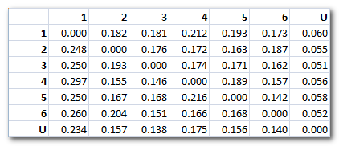
- Joint States Probabilities: the
sum of all probabilities of the whole transition matrix is equal to 1.
F.ex. showing below the observed values (6 maps + Unlabeled):
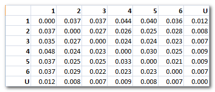
Note 1: In case a minimum correlation
threshold has been set, we end up with an additional "state", the one
with undefined labeling. Undefined data points are the one which don't
correlate well enough to any template maps. It is a sort of "garbage"
cluster, so to speak. It behaves like a regular cluster for all the
transition probabilities computation, though.
Note 2: The number of transitions ahead is which segment is
considered the one to compute the transition to. Default is 1, which means
the next segment. If you set to a higher value, like 2, the second-next
segment will be used. This is not the traditional Markov order.
Duration histograms
Two files per subject are outputed, one with linear and one with log time
scale:
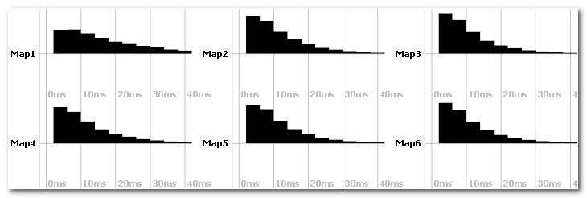
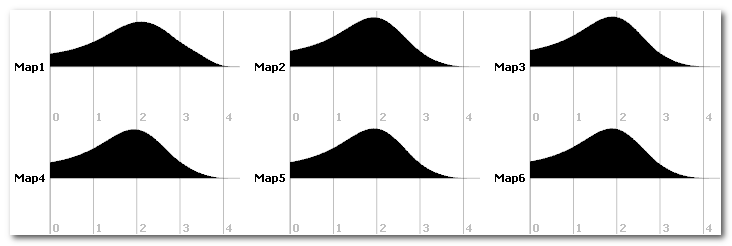
You can run statistics on the duration histograms.
Segments frequency
This option will create a new time line for each map (top picture), where each
segment (bottom picture) is replaced by a raised cosine bump. Here you can
focus at map 1 as a good example:
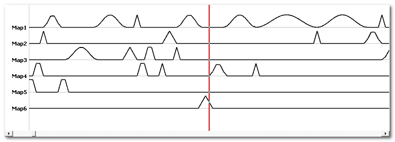
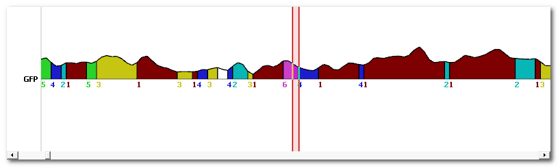
This can be used for frequency analysis.
Correlation output
Across time correlation shows the correlation between each template
map and every data point. Values are within the [0..1] range:
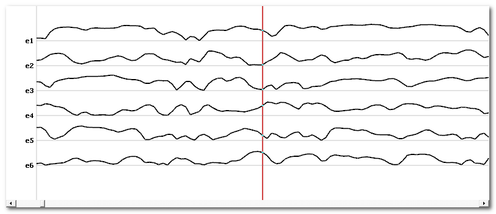
Once we have these time lines, we can again correlate them. This will show
how each correlation time course looks similar to the other ones
(which is not to be confused with the correlation between maps):
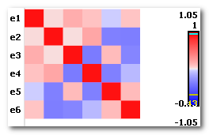
Fitting - Results
-
A .vrb verbose file,
containing all the parameters being used, plus the GFP normalization factors
computed
per file(s), if the option was selected.
-
A copy of the input templates .ep
and its corresponding .seg
files.
-
Then for each group of files:
-
In the root directory, 1 or n .csv files,
<basefilename>.Group<#>.LinesAsSamples.csv and / or
<basefilename>.Group<#>.FactorsAsColumns.csv
each
file containing all the output variables, arranged
in different layouts to match your
analysis tools.
-
In the root directory,
<basefilename>.Group<#>.seg
is the labeling file of all subjects together (only in case of
non-competitive fitting BTW)
-
In the Segmentations directory,
<basefilename>.Group<#>.Subj<#>.seg
contain labeling split by subject.
-
In the Data Clusters directory,
<basefilename>.Subject<#>.<original
file name>.Cluster<#>.*.sef
contain all the maps
assign to a given cluster.
-
In the Markov Chains directory, and in case of
Markov output,
-
<basefilename>.Group<#>.MarkovChains<#>.*.csv
files .
Each
file contains the probabilities of transitions (templatei →
templatej),
with 1 file for each step ranging from 1 to the maximum set in the
parameters.
The format of the .csv
follows these options.
-
<basefilename>.Group<#>.MarkovChains.freq
files.
These are the same data as the above .csv
files, but all transitions are stored (trick) into a .freq file. In this case, the "frequency" dimension
will hold the transitions dimension, the "time" dimension will
will hold the subjects index dimension.
-
In the Histograms Duration directory,
<basefilename>.Subject<#>.HistoDuration.Lin.sef
and
<basefilename>.Subject<#>.HistoDuration.Log.sef
contain the histograms of segments' durations.
-
In the Segments Frequency directory, and
in case of segments frequency
output,
<basefilename>.Group<#>.Subj<#>.SegFreq.sef
files
hold the segments coded as bumps, with 1 track per template,
reflecting the frequency of the fit templates.
-
In the Correlations directory, and in case of
correlation output,
<basefilename>.Group<#>.Subj<#>.CorrDataTempl.sef
<basefilename>.Group<#>.Subj<#>.CorrTempl.sef
files
hold the correlations of the data with each template, and the
correlation of the correlations.
Also see the technical points, and
especially the GEV remarks.
Format of the .csv results
As for today, there are 2 output arrays, each with a
different formatting and targetting different packages. They however
contain exactly the same data, this is just a matter of
formatting the 4D (number of groups x number of subjects x
number of segments x number of variables) dataset...
The .LinesAsSamples.csv file
Each line correspond to a subject, so the number of subjects
is equal to the total number of lines - 1 (the header line).
This is the format used by Cartool and
Statistica for its statistical analysis.
With this format, lines end up to be huge, and sometimes will fail to be read
by Excel, though Cartool and other analysis packages will have no
problems reading them.
The format is the following:
-
First line is a header which lists all the
mutliplexed variables' name. First variable name is always
Subject, then there are many variables with format of the like
Group*_Map*_VariableName.
-
Next lines hold the data themselves, with 1 row/line per
subject (so each line can be quite long):
-
Data are mulitplexed by Group, then Map, then Variable, in this
order from outer to inner variable loop.
F.ex. you'll find first
all the variables of Group1, Map1, then all the variables of Group1,
Map2, etc.. for all maps, then all the variables of Group2, Map1, then
all the variables of Group2, Map2, etc...
-
Data are written either in integer or floatting point, according to
their actual types (integer for counts f.ex., floatting point for GEV,
Gfp etc...)
Here is an example of the actual ordering (the formatting
itself is skipped for clarity), for 3 files, 2 groups, 2 maps, and 2
variables (NumTF and Gfp). The names in italic indicate
some actual data:
File1 Group1_Map1_NumTF Group1_Map1_MaxGfp Group1_Map2_NumTF Group1_Map2_MaxGfp Group2_Map1_NumTF Group2_Map1_MaxGfp Group2_Map2_NumTF Group2_Map2_MaxGfp
File2 Group1_Map1_NumTF Group1_Map1_MaxGfp Group1_Map2_NumTF Group1_Map2_MaxGfp Group2_Map1_NumTF Group2_Map1_MaxGfp Group2_Map2_NumTF Group2_Map2_MaxGfp
File3 Group1_Map1_NumTF Group1_Map1_MaxGfp Group1_Map2_NumTF Group1_Map2_MaxGfp Group2_Map1_NumTF Group2_Map1_MaxGfp Group2_Map2_NumTF Group2_Map2_MaxGfp
The .ColumnsAsFactors.csv file
Each column is a factor / variable.
This is the format used by R.
With this format, and contrary to the Lines As Samples format above, lines
are hopefully much shorter. The counterpart is that the number of lines is
much higher, and you have to make sure that all combinations of Files, Groups
and Maps indexes exist (like the indexes of a 3D array).
The format is the following:
-
First line is a header which lists all the
variables' name. First variables names are always Subject,
Group and Map, then followed by all the
variables names.
-
Next lines hold the data themselves:
-
The first 3 values hold the file name, group
index, and map index, all in text.
F.ex. File1
Group2 Map5
-
Next are all the variables values, in the order listed
from the header line.
-
Data are not necessarily ordered, though they are currently written
first by Group, then by Map, then by Variable.
Here is an example of the actual ordering (the formatting
itself is skipped for clarity), for 3 files, 2 groups, 2 maps, and 2
variables (NumTF and Gfp). The names in italic indicate
some actual data:
File1 Group1 Map1 Group1_Map1_NumTF Group1_Map1_MaxGfp
File1 Group1 Map2 Group1_Map2_NumTF Group1_Map2_MaxGfp
File1 Group2 Map1 Group2_Map1_NumTF Group2_Map1_MaxGfp
File1 Group2 Map2 Group2_Map2_NumTF Group2_Map2_MaxGfp
File2 Group1 Map1 Group1_Map1_NumTF Group1_Map1_MaxGfp
File2 Group1 Map2 Group1_Map2_NumTF Group1_Map2_MaxGfp
File2 Group2 Map1 Group2_Map1_NumTF Group2_Map1_MaxGfp
File2 Group2 Map2 Group2_Map2_NumTF Group2_Map2_MaxGfp
File3 Group1 Map1 Group1_Map1_NumTF Group1_Map1_MaxGfp
File3 Group1 Map2 Group1_Map2_NumTF Group1_Map2_MaxGfp
File3 Group2 Map1 Group2_Map1_NumTF Group2_Map1_MaxGfp
File3 Group2 Map2 Group2_Map2_NumTF Group2_Map2_MaxGfp
Fitting in the Inverse Solution space
This is the counterpart of the segmentation in
the Inverse Solution space. Instead of fitting the subjects' ERPs
with the template maps from the segmentation, we can fit the
Results
on Inverse Solution .ris
files with .ris templates
obtained from the segmentation in the inverse space.
<This part has to be totally rewritten>